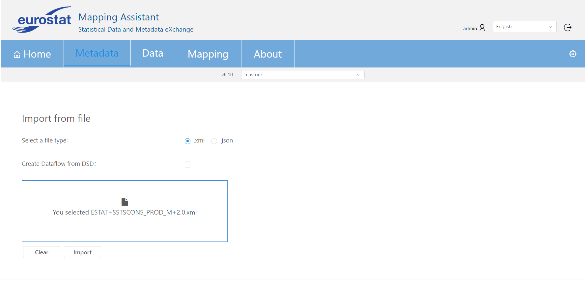
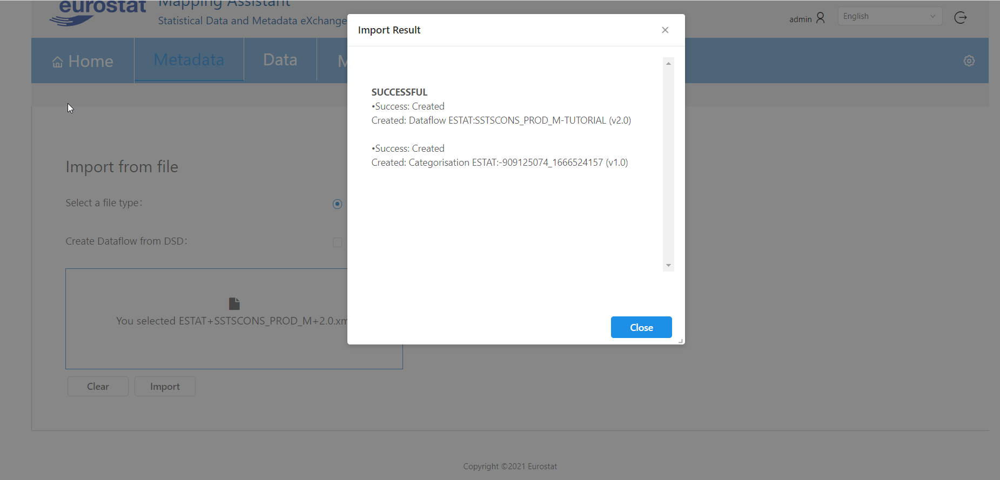

This screen supports the import of an artefact in the selected mapping store (that is defined in the dropdown selection under the menu bar at the top) as it is demonstrated in the below image. As it can be seen in the below screenshot, the artefact can be selected by clicking import button or with a single drag and drop action in the relevant area.

The format of the imported file can be either in json or xml format.
The creation of a Dataflow from a DataStructure is also supported by checking the option Create Dataflow from DSD.
When an artefact is imported a pop up dialog appears with the items that were successfully imported and those that failed to be imported as seen below:
